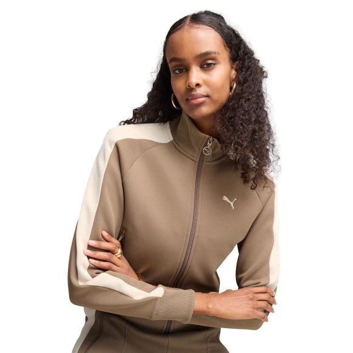

Conjunto Deportivo
S/280
Descripción
Celebra la herencia de la colección T7 con esta casaca corta de PUMA. Presenta las clásicas tiras en las mangas, un cierre bidireccional y bolsillos laterales con cierre. Los puños y la cintura en rib garantizan un ajuste cómodo, mientras que el ícono PUMA Cat bordado agrega nuestro característico toque.
Detalles
- Corte regular
- Tejido spacer
- Largo: Corto
- Cuello alto
- Con cierre
- Manga larga
- Detalles de la marca PUMA
Características
- Color: marrón
- Material: Algodón
- Tallas: S, M, L, XL
- Estilo: Urbano
Productos Relacionados

Producto1

Producto 2

Producto 3